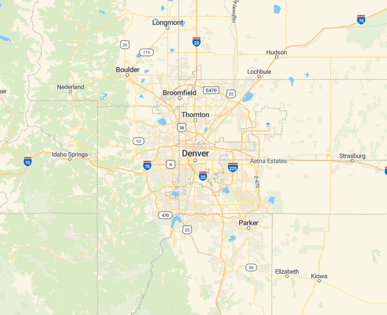
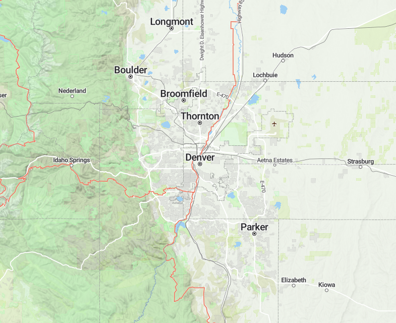
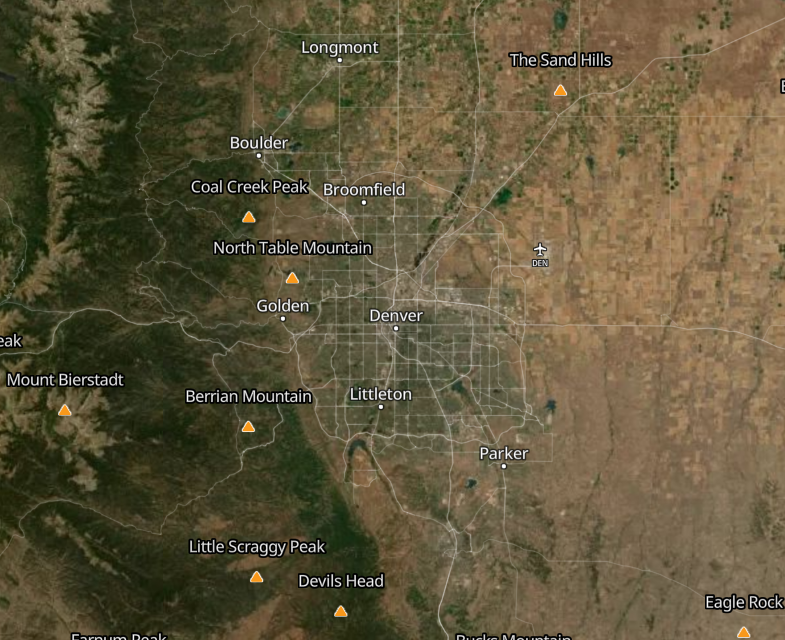

Disperse
National Forest Explorer
Base Map

Streets

Outdoor

Satellite
Recent satellite image
◀
▶
Opacity
Refresh for this view
Tools
Road
State Mode
-- Select a State --
Forest Mode
-- Select a Forest --
Toggle MVUM Roads
Toggle Forest Boundary
Select a road on the map to see its details.
⋮